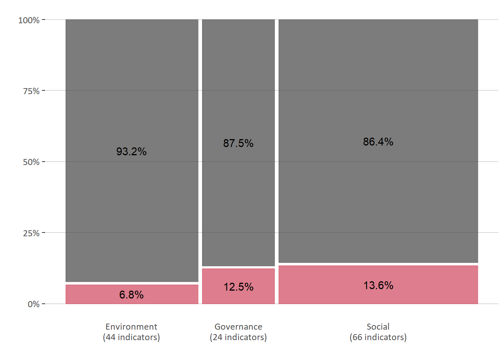
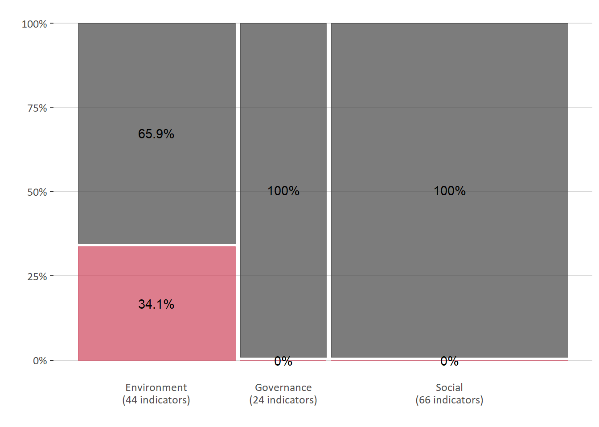
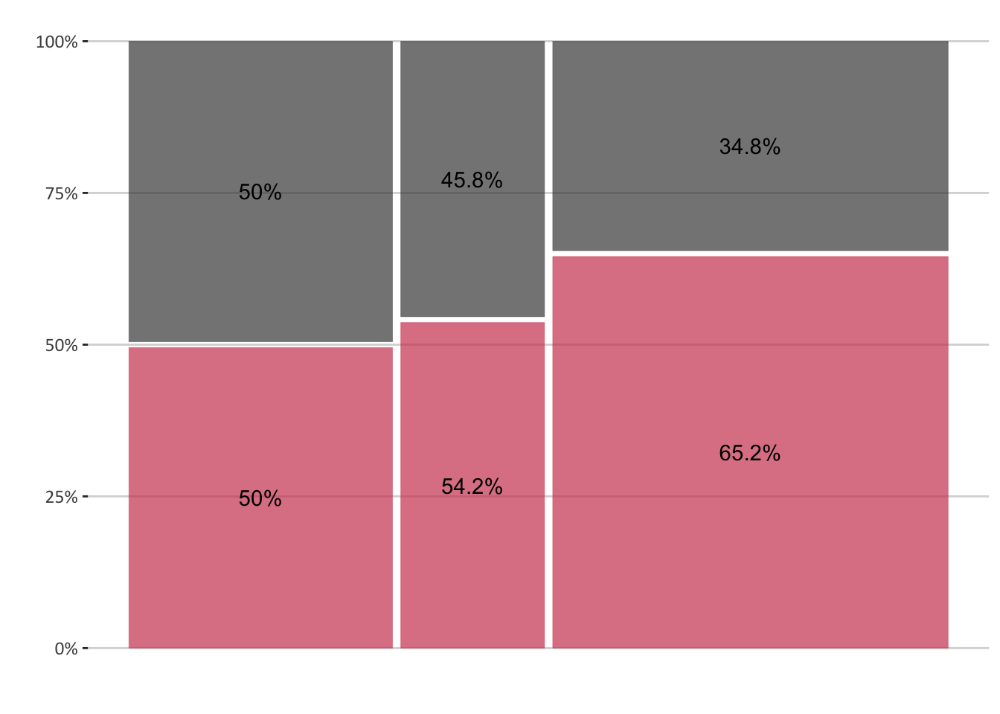
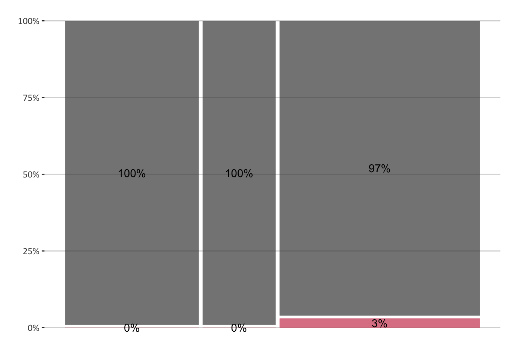
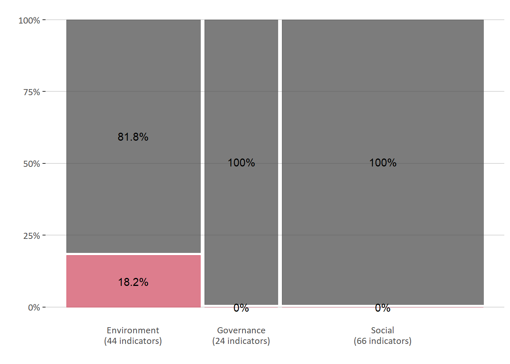
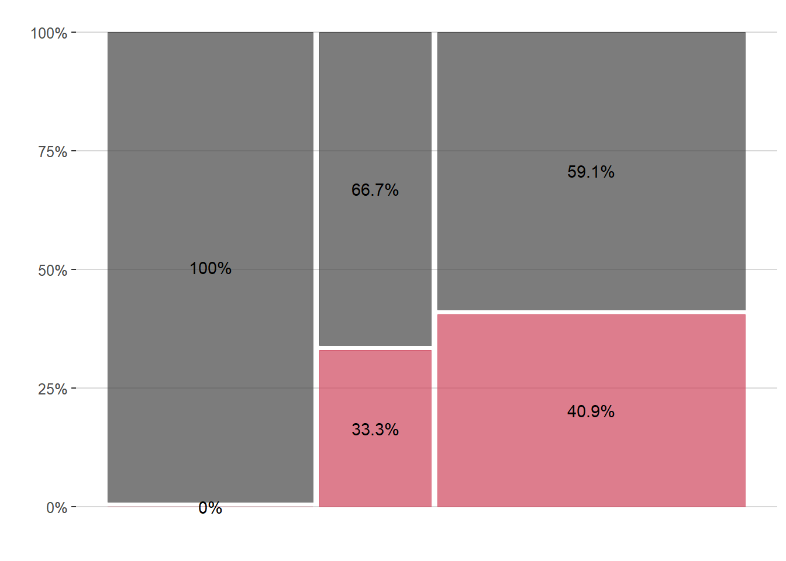
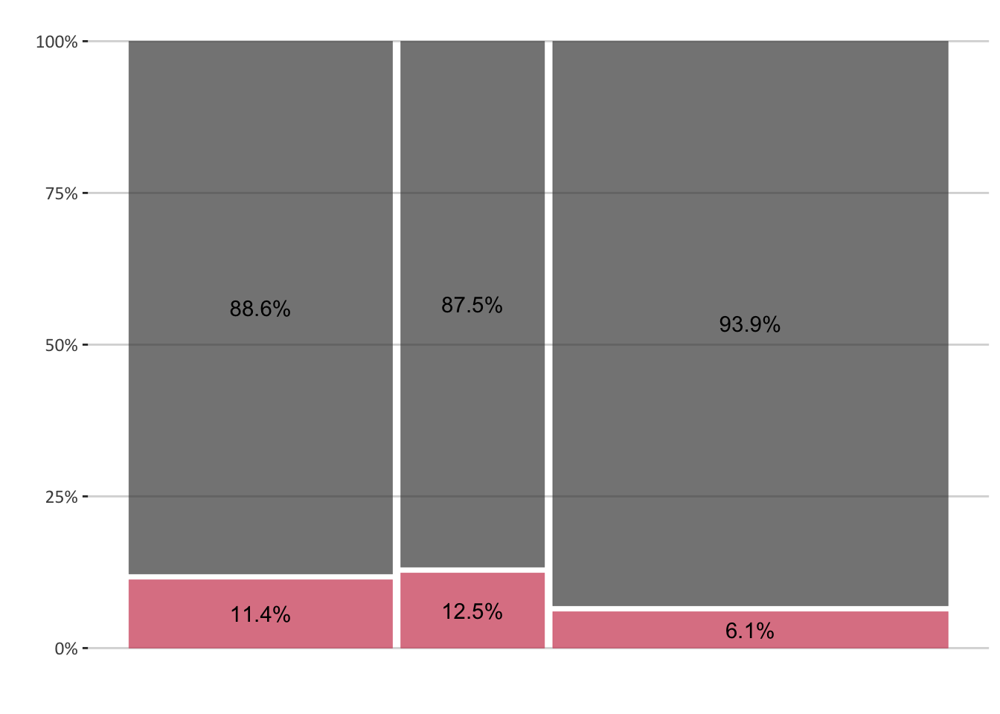
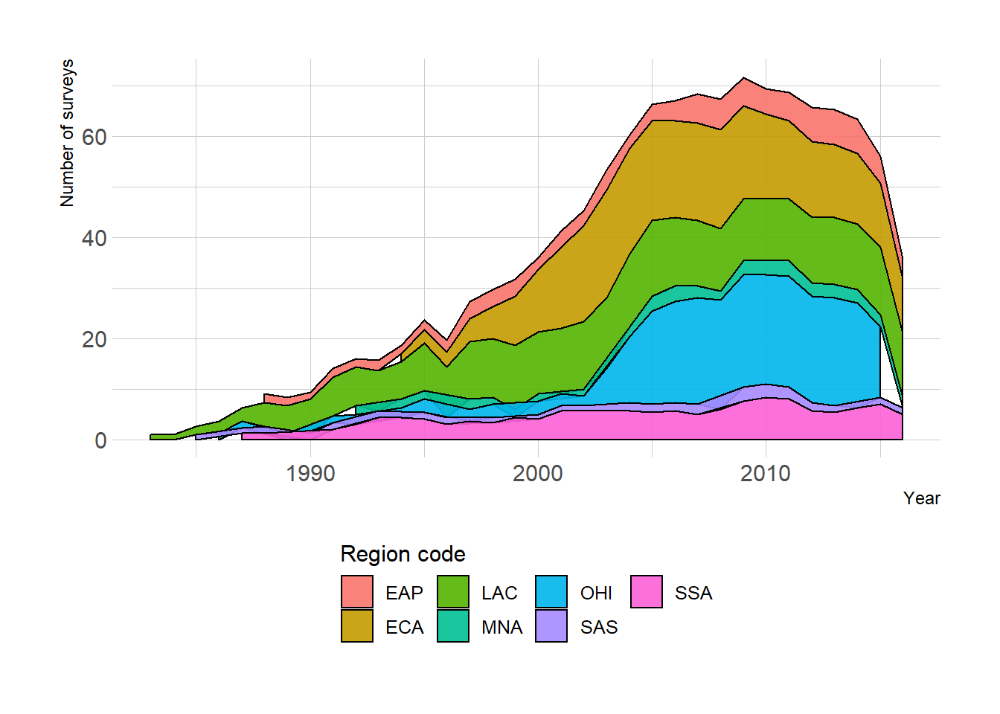
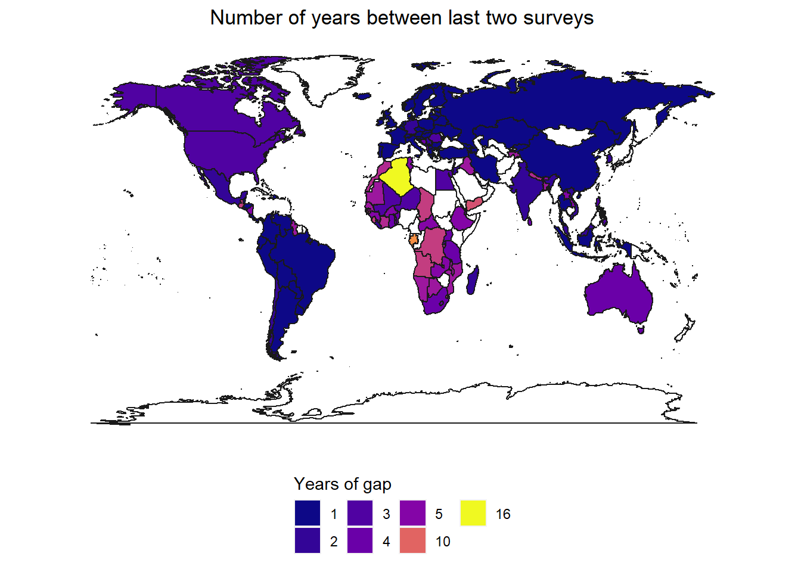

Easy Steps
Hard Steps
Table 4.1: Explanation A
| Source | all | n | Share | n | Share | n | Share |
|---|---|---|---|---|---|---|---|
| Other Sources | 104 | 34 | 0.0294 | 16 | 0.188 | 54 | 0.111 |
| World Bank | 30 | 10 | 0.2000 | 8 | 0.000 | 12 | 0.250 |
| All | 134 | 44 | 0.0682 | 24 | 0.125 | 66 | 0.136 |
A
Indicator has been explicitly deprecated or dropped Indicator only exists in a deprecated database (e.g., WRI Archives, Africa Development Indicators) Hopefully none of these are in the WBG ESG database . Recommend appropriate substitutes where available (e.g., PM2.5 for PM10)
Data gaps due to explanation A
Red areas show the proportion of excluded indicators
Figure 4.1: Explanation A
Table 4.2: Explanation B
| Source | all | n | Share | n | Share | n | Share |
|---|---|---|---|---|---|---|---|
| Other Sources | 104 | 34 | 0.235 | 16 | 0 | 54 | 0 |
| World Bank | 30 | 10 | 0.300 | 8 | 0 | 12 | 0 |
| All | 134 | 44 | 0.250 | 24 | 0 | 66 | 0 |
B
Indicator still available, but not being updated in WDI Indicator is in a current database, but does not have data for any country past a certain threshold (e.g., 2012) This is really on DECDG to either update these indicators, explicitly remove them, or find substitutes
Figure 4.2: Explanation B
Table 4.3: Explanation C
| Source | all | n | Share | n | Share | n | Share |
|---|---|---|---|---|---|---|---|
| Other Sources | 104 | 34 | 0.5 | 16 | 0.750 | 54 | 0.648 |
| World Bank | 30 | 10 | 0.5 | 8 | 0.125 | 12 | 0.667 |
| All | 134 | 44 | 0.5 | 24 | 0.542 | 66 | 0.652 |
C
MRV is subject to methodology lags 1) original source is updated biennially or longer, OR;
2) indicator is updated using raw data from 2+ years prior
There may be some scope to address these in cases where WBG is the primary producer of both the indicator and the underlying raw data.
Figure 4.3: Explanation C
Table 4.4: Explanation D
| Source | all | n | Share | n | Share | n | Share |
|---|---|---|---|---|---|---|---|
| Other Sources | 104 | 34 | 0 | 16 | 0 | 54 | 0.0185 |
| World Bank | 30 | 10 | 0 | 8 | 0 | 12 | 0.0833 |
| All | 134 | 44 | 0 | 24 | 0 | 66 | 0.0303 |
D
MRV is subject to curation lags WBG’s update cycle is greater than that of the original source This may be an area where we could improve if curation lags are material
Figure 4.4: Explanation D
Table 4.5: Explanation E
| Source | all | n | Share | n | Share | n | Share |
|---|---|---|---|---|---|---|---|
| Other Sources | 104 | 34 | 0.265 | 16 | 0 | 54 | 0 |
| World Bank | 30 | 10 | 0.000 | 8 | 0 | 12 | 0 |
| All | 134 | 44 | 0.205 | 24 | 0 | 66 | 0 |
E MRV is subject to licensing lags (e.g., IEA) Provider license prevents WBG from using latest available data We could only improve these by eliminating legal restrictions or identifying good substitutes
Figure 4.5: Explanation e
Table 4.6: Explanation F
| Source | all | n | Share | n | Share | n | Share |
|---|---|---|---|---|---|---|---|
| Other Sources | 104 | 34 | 0 | 16 | 0.0625 | 54 | 0.370 |
| World Bank | 30 | 10 | 0 | 8 | 0.8750 | 12 | 0.583 |
| All | 134 | 44 | 0 | 24 | 0.3333 | 66 | 0.409 |
F
Data coverage is dependent on country-level microdata Indicator is produced from country-level microdata surveys with varying schedules
Frequency of household surveys is typically a capacity issue
Figure 4.6: Explanation F
Table 4.7: Explanation G
| Source | all | n | Share | n | Share | n | Share |
|---|---|---|---|---|---|---|---|
| Other Sources | 104 | 34 | 0.0882 | 16 | 0.188 | 54 | 0.0556 |
| World Bank | 30 | 10 | 0.2000 | 8 | 0.000 | 12 | 0.0833 |
| All | 134 | 44 | 0.1136 | 24 | 0.125 | 66 | 0.0606 |
G
Data coverage is geographically or economically limited Values are entirely missing for classes of countries (high-income, small economies, etc) These could be corrected for in many cases
Figure 4.7: Explanation G
Table 4.8: Indicators from household surveys
| Sector | Indicator |
|---|---|
| SOC | Access to electricity (% of population) |
| GOV | Ease of doing business index (1=most business-friendly regulations) |
| SOC | Average duration of power outages (hours) |
| GOV | Value lost due to electrical outages (% of sales for affected firms) |
| GOV | Time required to start a business (days) |
| GOV | Total tax rate (% of commercial profits) |
| GOV | Exports of goods and services (% of GDP) |
| SOC | Literacy rate, adult total (% of people ages 15 and above) |
| SOC | Cause of death, by communicable diseases and maternal, prenatal and nutrition conditions (% of total) |
| SOC | Mortality rate, under-5 (per 1,000 live births) |
| SOC | People using safely managed drinking water services (% of population) |
| SOC | Maternal mortality ratio (modeled estimate, per 100,000 live births) |
| SOC | People using safely managed sanitation services (% of population) |
| SOC | Income share held by lowest 20% |
| SOC | Poverty headcount ratio at $1.90 a day (2011 PPP) (% of population) |
| SOC | GINI index (World Bank estimate) |
| SOC | Poverty headcount ratio at national poverty lines (% of population) |
| SOC | Employment to population ratio, ages 15-24, total (%) (modeled ILO estimate) |
| SOC | Vulnerable employment, total (% of total employment) (modeled ILO estimate) |
| SOC | Children in employment, total (% of children ages 7-14) |
| SOC | Labor force participation rate, total (% of total population ages 15-64) (modeled ILO estimate) |
| SOC | Ratio of female to male labor force participation rate (%) (modeled ILO estimate) |
| SOC | Labor force with secondary education (% of total) |
| SOC | Unemployment, youth total (% of total labor force ages 15-24) (modeled ILO estimate) |
| SOC | Unemployment, female (% of female labor force) (modeled ILO estimate) |
| SOC | Unemployment, total (% of total labor force) (modeled ILO estimate) |
| SOC | Net migration |
| SOC | Mortality rate, infant (per 1,000 live births) |
| SOC | Fertility rate, total (births per woman) |
| SOC | Population ages 65 and above (% of total) |
| GOV | Unmet need for contraception (% of married women ages 15-49) |
Among the 134 ESG indicators, 31 of them come from surveys. Some of them come from labor force surveys, others come from living standard measurement surveys, and others from independent surveys or enterprise surveys. Each type of survey has characteristics that the others do not have, but, in general, surveys are characterized by being an expensive instrument, whose feasibility depends on budget. It requires planning, extensive execution, training of personal, data cleaning, and many other factors that makes their frequency unstable.
In this section, we explore the availability of household surveys—which are the underlying data of global poverty estimates—as a case study to understand the general complexity of the indicators that are calculated from microdata. Though not all the conclusions and insights from this case study apply to all surveys, a proper analysis of household surveys analysis can be adequate to inductively infer the context of other ESG indicators that use other types of surveys as their underlying data.
The biggest repository of household surveys for Global poverty monitoring is known as PovcalNet It is an online too hosted by the World Bank that was developed with the purpose of public replication of the World Bank’s poverty measures at the international poverty line (IPL). PovcalNet contains poverty estimates from more than 1,600 household surveys spanning 164 economies and over 40 years, from 1977 to 2017.
The household survey data are typically collected by national statistical offices in each country, and then compiled, processed, and vetted for inclusion in the Global Monitoring Database (GMD), the World Bank’s repository of multitopic income and expenditure household surveys used to monitor global poverty and shared prosperity. Selected variables have been harmonized to the extent possible such that levels and trends in poverty and other key socio-demographic attributes can be reasonably compared across and within countries over time. The GMD’s harmonized microdata are used in PovcalNet and the GDSP (World Bank 2018).
Figure 4.8: Production of household surveys over time
Poverty rates are based on one of two types of welfare aggregate measure, income or consumption. Countries choose their measure of preference, but, in general, poor countries tend to measure poverty with consumption surveys, whereas rich countries do so with income surveys. Consumption surveys have a wide range of question and are thus more time-consuming to answer. Also, they are more expensive than income surveys and thus they are conducted around every five years. In contrast, income surveys are less expensive and mostly available every year. So, if a country measures poverty using a consumption-based survey, poverty and inequality measures will be available every five years in average. In the early 70s and 80s, the gap between surveys was so wide that poverty measures were available about every ten years. Today. The number of surveys available is larger and the year gaps between them are shorter. Figure 4.8 shows the production of surveys over time by region. As expected, the most recent years show a decay in the production, not because no surveys are being conducted, but because they have not been released yet. Overall it seems that all regions are doing very well on improving the number of household surveys available to measure poverty.
Figure 4.9: Number of years between last two surveys
At the country level, however, the frequency of household surveys varies widely, especially in the Africa region. Figure 4.9 plots the number of years between the last two surveys publicly released in the countries available in the PovcalNet system. Countries in the Latina America and the East Europe and Central Asia regions conduct household surveys every year or every other year. In contrast, the average country in the Middle East and North Africa and in the Sub-Saharan Africa regions conduct household surveys every 5.7 years. In addition, there are 15 countries with no household surveys for measuring poverty in these two regions. Other regions, like South Asia and East Asia and Pacific show a relatively better scenario than Africa, yet not ideal. The average country releases a household survey every 5.2 years in the South Asia region, and every 3.8 in the East Asia and Pacific region. Though it is true that many countries in the EAP and the LAC regions (21 and 16, respectively) do not release household surveys suitable to calculate international poverty measures, all of them are small islands with low population.
blah blah
Page built: 2020-01-24